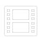

Toque y luego toque  para abrir el navegador de medios (vídeo) y elija el vídeo que desee añadir como una capa.
Toque y luego toque para abrir el navegador de medios (Imagenes) y seleccione la imagen que desea añadir como una capa.
Toque y toque para elegir las etiquetas que desea añadir.
Toque y toque para introducir el texto deseado en la capa.
Toque luego toque para dibujar o escribir en la capa.
Después de crear una capa con , toque en la pestaña y defina las opciones deseadas.